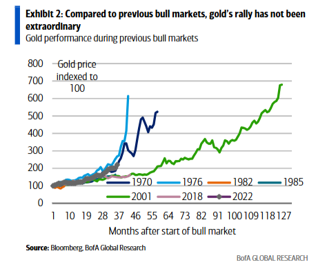
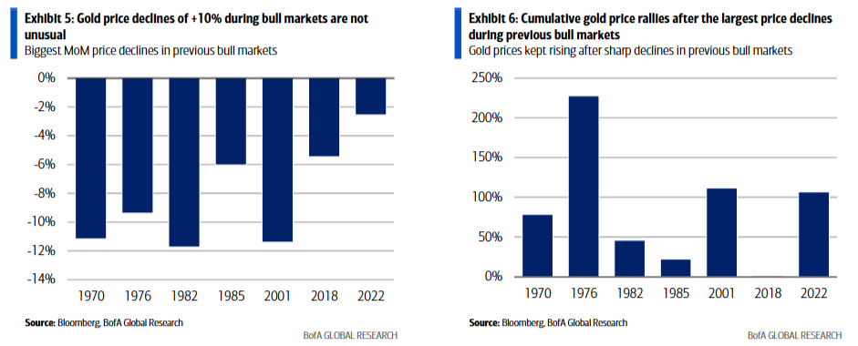

本周黄金一度累跌超5%，美银认为黄金在大幅上涨后出现修正很正常，月度超过10%的回调在以往牛市中同样常见。
追风交易台消息，10月28日，美银证券发表研报指出，自1970年以来的历次黄金大牛市中，超过10%的月度回调并不少见。在这些回调之后，金价往往会重拾升势，继续走高。


黄金牛市的真正终结，并非因为技术性超买或短期震荡，而是其背后的核心驱动因素发生了根本性改变。例如，从滞胀转向激进加息，或从非常规经济政策回归传统。
研报强调，当前的回调可能为尚未充分配置黄金的投资者提供了机会。只要驱动本轮牛市的宏观因素没有改变，黄金的长期上涨趋势就依然稳固。
回调超10%？黄金牛市的“家常便饭”
美银表示牛市的道路从来都不是一帆风顺的。
近期金价在创下一系列历史新高后出现了回调，市场情绪也随之紧张。然而，将本轮行情置于历史长河中审视，会发现这远非异常现象。
报告中的数据显示，回顾自1970年以来的六次主要黄金牛市（分别始于1970年、1976年、1982年、1985年、2001年和2018年），期间发生超过10%的月度价格下跌并不罕见。


例如，在1976年开启的牛市中，曾出现过接近12%的单月最大跌幅。
然而，对于投资者而言，更关键的信息是：这些剧烈的回调，没有一次真正终结牛市的步伐。
这表明，在宏观驱动力未变的情况下，技术性的回调往往是牛市中健康的一部分，是市场清洗过度杠杆、巩固上涨基础的正常过程。
而数据显示，在这些大幅回调之后，金价都继续推高，累计涨幅在50%至200%不等。
因此，对于长期投资者来说，此类波动不应成为恐慌性抛售的理由。
美银表示此前在其黄金价格预测中，研究团队已预见到修正的可能，并预计金价将在明年推高至5000美元/盎司。
历史牛市如何终结，驱动因素改变才是关键
如果说回调不足为惧，那么投资者真正需要警惕的信号是什么？报告认为是宏观基本面的根本性转变。
黄金价格的上涨并非无源之水，每一次牛市都有其独特的宏观驱动力，而牛市的终结，无一例外地发生在这些核心驱动力消退或逆转之时。
报告详细梳理了历次黄金牛市的“终结者”：
- 1970年牛市（石油危机驱动）：随着地缘政治趋于稳定，通胀担忧缓解，牛市动力减弱。
- 1976年牛市（滞胀驱动）：时任美联储主席沃尔克采取了激进的加息政策以对抗通胀，高利率环境终结了黄金的吸引力。
- 1982年牛市（反弹交易）：始于沃尔克加息后金价暴跌后的“反弹交易”，叠加当时美国经济衰退（1981-1982年）的背景。但这轮牛市的结束相对简单，因为价格反弹行情本身已经走到了尽头。
- 2001年牛市（量化宽松QE驱动）：当美联储宣布第三轮量化宽松时，市场认为利率已无进一步下降空间，宽松预期的边际效应递减，牛市随之停滞。
- 2018年牛市（新冠疫情驱动）：随着后疫情时代全球经济重新开放，大规模货币宽松政策逐渐退出，避险需求下降。
因此报告指出，本轮自2022年开启的牛市，其核心驱动力源于“非常规的经济政策”，具体包括美国拜登及特朗普政府期间高企的财政赤字、不断增长的债务路径，以及市场对政府偿债能力的担忧。
美银强调只要美国未能“回归更正统的经济政策和传统的保守财政政策”，或者美联储未能“重新转向鹰派立场”，那么支撑黄金价格的宏观基石就依然稳固。
分析指出在此背景下，任何短期的价格回调，都更有可能是一个战略性的买入机会，而非趋势反转的信号。
~~~~~~~~~~~~~~~~~~~~~~~~
以上精彩内容来自追风交易台。
更详细的解读，包括实时解读、一线研究等内容，请加入【追风交易台▪年度会员】